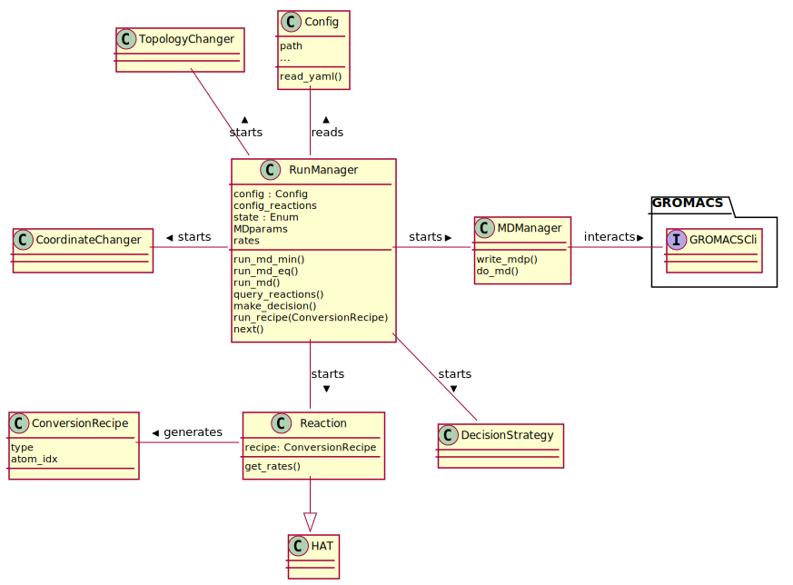
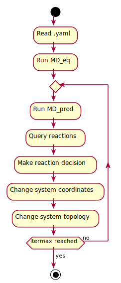

(Re)render the diagrams with
plantuml -tsvg uml.mdor preview online with plantuml.
@startuml
class RunManager{
config : Config
tasks : Queue
state : Enum
filehist : list[TaskFiles]
iteration
chosen_recipe
run()
run_md_min()
run_md_eq()
run_md_pull()
query_reactions()
decision_strategy()
run_recipe(ConversionRecipe)
next()
}
class Config{
file paths
sequence
...
__init__()
}
class ConversionRecipe{
type
atom_idx
}
class Reaction{
}
class HAT{
}
class HomolyticBreak{
get_reaction_result()
}
class CoordinateChanger{
}
class TopologyChanger{
}
package GROMACS{
interface GROMACSCli{
}
}
Reaction --|> HAT
Reaction --|> HomolyticBreak
Config -- RunManager : reads <
RunManager -right- GROMACSCli : > interacts
RunManager -- Reaction : > starts
ConversionRecipe - Reaction: < generates
CoordinateChanger - RunManager: < starts
TopologyChanger - RunManager: < starts
TopologyChanger -[hidden]-> CoordinateChanger
@enduml
@startuml classuml
class RunManager{
config : Config
config_reactions
state : Enum
MDparams
rates
run_md_min()
run_md_eq()
run_md()
query_reactions()
make_decision()
run_recipe(ConversionRecipe)
next()
}
class Config{
path
...
read_yaml()
}
class MDManager{
write_mdp()
do_md()
}
class ConversionRecipe{
type
atom_idx
}
class DecisionStrategy{
}
class Reaction{
recipe: ConversionRecipe
get_rates()
}
class HAT{
}
class CoordinateChanger{
}
class TopologyChanger{
}
package GROMACS{
interface GROMACSCli{
}
}
Reaction --|> HAT
Config -- RunManager : reads <
RunManager - MDManager : > starts
MDManager - GROMACSCli : > interacts
RunManager -- Reaction : > starts
RunManager -- DecisionStrategy : > starts
ConversionRecipe - Reaction: < generates
CoordinateChanger - RunManager: < starts
TopologyChanger - RunManager: < starts
TopologyChanger -[hidden]-> CoordinateChanger
MDManager -[hidden]-> DecisionStrategy
@enduml
@startuml flow
start
:Read .yaml;
:Run MD_eq;
repeat
:Run MD_prod;
:Query reactions;
:Make reaction decision;
:Change system coordinates;
:Change system topology;
repeatwhile (itermax reached) is (no)
-> yes;
stop
@enduml